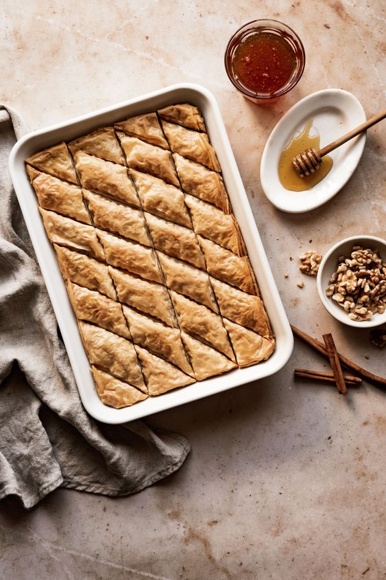

Baklava is a sumptuous dessert originating from the Middle East and Mediterranean regions. This sweet delicacy is crafted by layering thin sheets of flaky phyllo dough, generously brushed with melted butter and a touch of syrup. Between these layers, a lavish filling of chopped nuts, often including pistachios, walnuts, or almonds, creates a rich and nutty texture. After baking to golden perfection, the entire creation is infused with a fragrant sugar or honey syrup that seeps into the layers, giving each bite an exquisite balance of crispy, buttery goodness and delightful sweetness.
"A masterpiece of culinary art, baklava is a dessert that promises a symphony of flavors and textures in every bite. This classic treat originates from the Mediterranean and is renowned for its intricate layers of paper-thin phyllo pastry, draped with a luscious blend of crushed nuts and spices. The pastry is meticulously brushed with butter, achieving a golden and flaky exterior upon baking. A final touch of aromatic syrup, often infused with rose water or orange blossom, elevates the dessert to an unforgettable level of sweetness, making each mouthful an indulgent adventure. ", .
Baklava, a cherished dessert with a history spanning centuries, is a confectionery masterpiece that beckons the senses. Drawing inspiration from the Mediterranean and Middle Eastern culinary traditions, this delectable treat showcases an artistic arrangement of delicate phyllo layers, intricately interwoven with a mixture of finely chopped nuts. Once baked to perfection, the pastry is showered with a gentle drizzle of syrup, soaking into the layers to create a harmonious fusion of flavors. The resulting dessert boasts a satisfying contrast between the crispy, buttery exterior and the tender, nutty interior, making it an iconic culinary treasure enjoyed across cultures.
Phyllo dough (also spelled filo dough): Thin sheets of dough that create the flaky layers,Chopped nuts: Traditionally, walnuts, pistachios, and almonds are commonly used,Sugar: Adds sweetness to the filling,Unsalted butter: Used to brush between the layers for richness and crispiness,Honey: Adds depth of flavor and sweetness,Lemon juice: Balances the sweetness and adds a hint of tartness.